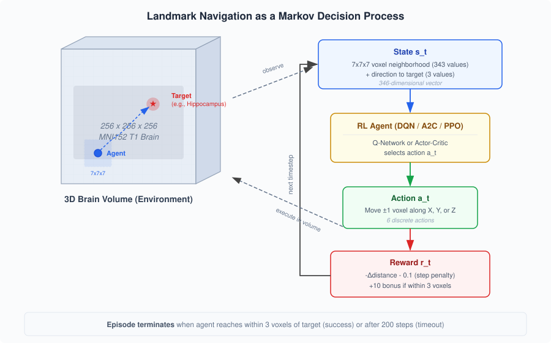

Finding anatomical landmarks in brain MRI is important for many neuroimaging tasks, including atlas registration, surgical planning, and volumetric analysis. Traditional approaches use template-based atlas registration or supervised CNNs trained on large, manually annotated datasets. Both require a lot of labeling effort and can generalize poorly to atypical or pathological brains.
This project frames landmark detection as a navigation problem: a deep RL agent starts at a random location inside a 3D brain volume and has to learn to navigate to a specified anatomical target. This is appealing because it does not require voxel-level segmentation labels, only target coordinates, and the agent learns an implicit spatial model of brain anatomy through interaction. We target 15 subcortical structures (e.g., thalamus, hippocampus, ventricles, brain-stem) that span a wide range of sizes, depths, and MRI contrast levels within a standard MNI152 T1-weighted volume. The central question is: how do different deep RL algorithms and environment design choices affect the agent's ability to reliably locate these landmarks?

We model the problem as an episodic MDP with a discrete action space (Figure 1). At each step, the agent observes a local neighborhood of voxel intensities (e.g., 7×7×7 = 343 values) around its current position, plus a 3-component direction vector toward the target. It picks one of 6 actions (move ±1 voxel along each spatial axis). An episode ends when the agent gets within 3 voxels of the target (success) or exceeds 200 steps (failure). Rewards combine a dense distance-based signal, a step penalty, and a success bonus. We compare three algorithms that represent different points in the RL design space (Sutton & Barto [4]). DQN is an off-policy method that approximates the optimal action-value function q*(s, a) using a neural network, then acts greedily with respect to it (Ch. 10). It uses experience replay, where transitions are stored in a buffer and sampled randomly for training, and a separate target network to stabilize the semi-gradient updates. Action selection follows an ε-greedy policy (Ch. 2.2) that decays over time. A2C is an on-policy actor-critic method (Ch. 13.5) that maintains two function approximators: an actor π(a|s; θ) that parameterizes the policy directly, and a critic v̂(s; w) that estimates the state-value function for use as a baseline. The policy is updated via the policy gradient theorem (Ch. 13.2), using the advantage function A(s, a) = q(s, a) − v(s) to reduce variance. PPO builds on the actor-critic framework but constrains how much the policy can change per update by clipping the probability ratio between the new and old policies, which prevents the large destructive updates that can occur with standard policy gradient methods. The entire system runs in-browser using TensorFlow.js, and we use a pretrained MeshNet model from Brainchop [3] for subject-specific brain parcellation to define landmark regions.
The closest prior work is Ghesu et al. [1] and Alansary et al. [2], both of which formulate anatomical landmark detection as RL navigation with 6 discrete movement actions and a distance-based reward. Ghesu et al. [1] use DQN on 3D CT scans with a fixed-scale approach: the agent observes a fixed-size image patch and a frame history buffer of the last 4 steps to reduce oscillation. Alansary et al. [2] extend this with a multi-scale coarse-to-fine strategy for MRI view planning, starting with large step sizes (9 voxels) and coarse image spacing, then refining to single-voxel steps across 3 scales. Both evaluate only DQN variants (DQN, Double DQN, Dueling DQN) and find that no single architecture consistently wins across landmarks. Our approach shares the same basic formulation but differs in several ways: we compare across algorithm families (off-policy DQN versus on-policy A2C and PPO), which neither prior work does; we provide the agent with an explicit direction-to-target vector instead of a frame history buffer and ablate this choice; we systematically vary the neighborhood size (3×3×3 to 7×7×7) rather than fixing the patch size and varying image spacing; and we ablate the reward function itself (sparse vs. dense vs. hybrid), which prior work treats as fixed.
We evaluate each configuration on all 15 landmarks using 5 random seeds per condition. The main metrics are success rate (fraction of episodes reaching within 3 voxels of the target), path efficiency (ratio of straight-line distance to actual steps taken), and sample efficiency (episodes needed to reach 80% success rate). We also report mean episode reward and final Euclidean distance to the target.
The experiments are structured in stages to keep the total number of runs manageable. First, we compare the three algorithms with a fixed hybrid reward and 7×7×7 state (3 × 15 × 5 = 225 runs). Next, we fix the best-performing algorithm and ablate reward formulation (sparse, dense, hybrid) and state representation (3×3×3, 5×5×5, 7×7×7, with and without direction vector). Finally, we aggregate results to rank landmarks by difficulty and look at correlations with anatomical properties like structure volume and MRI contrast. Baselines include a random-walk agent and a greedy agent that always steps toward the target.
We propose a systematic study of deep RL for anatomical landmark navigation in 3D brain MRI. By comparing DQN, A2C, and PPO under controlled variations in reward shaping and state representation across 15 subcortical landmarks, we want to find out which algorithmic and design choices matter most for navigation performance. The project builds on an existing browser-based environment (NiivueRL) with working DQN and A2C agents. The remaining work is to implement PPO, build an experiment runner for batch evaluation, and run the proposed ablation studies over the remainder of the semester.
[1] F. C. Ghesu et al., “Multi-scale deep reinforcement learning for real-time 3D-landmark detection in CT scans,” IEEE Trans. Pattern Anal. Mach. Intell., vol. 41, no. 1, pp. 176–189, 2019.
[2] A. Alansary et al., “Automatic view planning with multi-scale deep reinforcement learning agents,” in Proc. MICCAI, 2018.
[3] S. M. Plis, M. Masoud, and F. Hu, “Brainchop: Providing an edge ecosystem for deployment of neuroimaging artificial intelligence models,” Aperture Neuro, vol. 4, 2024.
[4] R. S. Sutton and A. G. Barto, Reinforcement Learning: An Introduction, 2nd ed. MIT Press, 2018.